Buah alpukat bermanfaat untuk kesehatan jantung, mengontrol tekanan darah, menurunkan kadar kolesterol, mengatur kadar gula darah, mengurangi resiko stroke, mencegah kanker, menambah berat badan dan juga bagus untuk kesehatan mata.
Buah alpukat bermanfaat untuk kesehatan jantung, mengontrol tekanan darah, menurunkan kadar kolesterol, mengatur kadar gula darah, mengurangi resiko stroke, mencegah kanker, menambah berat badan dan juga bagus untuk kesehatan mata.Manfaat Buah Bagi Kesehatan
Buah-buahan merupakan makanan alami yang memiliki kandungan vitamin, gizi, dan mineral yang sangat baik untuk dikonsumsi tiap hari. Mengkonsumsi buah dapat mengoptimalkan kesehatan anda dalam jangka panjang juga menjaga dan meningkatkan energi anda.
Dengan jadwal kita sehari-hari yang padat berpengaruh terhadap pola makan kita. Banyak diantara kita lebih memilih makan siap saji dan makanan dengan pengawet dibandingkan dengan makanan segar dan sehat.
Makanan cepat saji mengandung kalori tinggi, selain itu nutrisi yang terkandung didalamnya juga tidak banyak. Berbeda dengan makanan alami yang segar seperti buah, buah mengandung banyak manfaat untuk tubuh kita.
Buah-buahan yang sering kita temui sehari-hari akan saya bahas di sini beserta manfaatnya. Berikut penjelasannya :
1. Manfaat Buah Alpukat
Buah alpukat mengandung lemak sehat oleat (omega-9), vitamin A, vitamin B, vitamin B6, vitamin C, vitamin E, zat besi, tembaga, kalium, serat, dan asam solfat. Buah alpukat kaya akan manfaat dan dapat melindungi tubuh dari berbagai penyakit.
Buah alpukat bermanfaat untuk kesehatan jantung, mengontrol tekanan darah, menurunkan kadar kolesterol, mengatur kadar gula darah, mengurangi resiko stroke, mencegah kanker, menambah berat badan dan juga bagus untuk kesehatan mata.
2. Manfaat Buah Anggur
Buah anggur mengandung vitamin A, vitamin B komplek, vitamin C, vitamin K, asam galat, glukosida, mangan, zat besi, dan kalsium. Buah anggur terdapat senyawa lain seperti zat polifenol dan resveratol yang dikenal sebagai antioksidan.
 Buah anggur bermanfaat untuk mengurangi resiko terkena kanker payudara, prostat, dan usus besar. Selain itu buah anggur juga dapat menurunkan resiko stroke, mengontrol gula darah, menyehatkan ginjal dan pencernaan. Kandungan lain buah anggur juga dimanfaatkan untuk antioksidan dan anti mikroba.
Buah anggur bermanfaat untuk mengurangi resiko terkena kanker payudara, prostat, dan usus besar. Selain itu buah anggur juga dapat menurunkan resiko stroke, mengontrol gula darah, menyehatkan ginjal dan pencernaan. Kandungan lain buah anggur juga dimanfaatkan untuk antioksidan dan anti mikroba.
3. Manfaat Buah Apel
Buah apel mengandung vitamin A, vitamin B, vitamin C. kandungan serat pada buah apel dapat membuat kenyang lebih lama pada lambung kita, sehingga buah apel ini cocok untuk diet dan selain itu aman untuk usus kita.
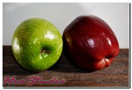Buah apel selain membantu kerja usus halus juga memiliki manfaat lain seperti mengurangi resiko gangguan pernapasan, mengontrol gula dalam darah, mengatasi masalah osteoporosis, membantu mencegah dan mengobati kanker, menurunkan kolesterol, mengatasi diare, serta menyehatkan jantung.
4. Manfaat Buah Asam
Buah asam mengandung kalsium, fosfor, asam nitrat, asam malat, dan asam pipekolat. Buah asam bermanfaat untuk mengobati sariawan.
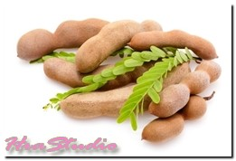Manfaat buah asam yang lain yaitu untuk meningkatkan nafsu makan, membantu fungsi organ pencernaan, membantu mengatur kadar kolesterol dan trigliserida, dan juga untuk mengatasi sembelit.
5. Manfaat Buah Arbei
Buah arbei mengandung vitamin A, vitamin B1, vitamin C, protein, lemak, karbohidrat, asam folat, kalsium, dan fosfor. Buah arbei juga memiliki kandungan saponin berupa glikosida, favonoida, polofenol serta memiliki antibakteri.
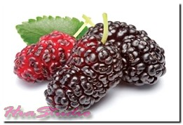Buah arbei bermanfaat untuk mengobati sariawan, untuk meringankan gejala diare, membantu melawan kanker, sebagai obat tifus dan dapat digunakan untuk mengobati maag.
6. Manfaat Buah Belimbing
Buah belimbing mengandung vitamin A, vitamin C, vitamin E, vitamin K, folat, niacin, fosfor, zat besi, kalori, protein, lemak, karbohisrat, serat dan juga kalsium. Buah belimbing bersifat antioksidan dan juga seratnya berguna bagi kesehatan pembuluh darah.
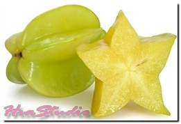Buah belimbing dapat dimanfaatkan untuk mengatasi hipertensi, menurunkan kadar kolesterol. Melancarkan sistem pencernaan, menurunkan berat badan, mengatasi gangguan hati, dan sebagai antioksidan alami.
7. Manfaat Buah Bengkuang
Buah bengkoag mengandung vitamin B, vitamin C, zat besi, kalsium, lemak, dan karbohidrat. Buah bengkoang baik untuk kulit karena itu sering dijadikan sebagai bahan utama untuk perwatan kecantikan.
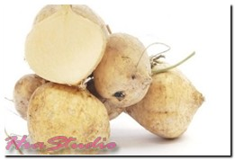Buah bengkoang selain bermanfaat mencerahkan kulit berguna juga untuk mencegah penuaan dini pada wajah, merawat kulit tetap sehat dan melembabkan kulit.
8. Manfaat Buah Blewah
Buah blewah mengandung vitamin A, vitamin C, mineral kalium, folat, magnesium, mangan, tembaga, seng, kobalt, dan juga krom. Buah blewah sangat baik dikonsumsi karena dapat menangkal radikal bebas penyebab penyakit jantung dan kanker.
 Buah blewah bermanfaat untuk menurunkan tekanan darah tinggi, untuk menjaga kesehatan mata, menurunkan tekanan darah, mencegah kanker rahim, untuk menjaga kesehatan jantung, mengatasi batu ginjal, mencegah asam urat, mengatasi insomnia, dan sebagai sumber antioksidan yang baik.
Buah blewah bermanfaat untuk menurunkan tekanan darah tinggi, untuk menjaga kesehatan mata, menurunkan tekanan darah, mencegah kanker rahim, untuk menjaga kesehatan jantung, mengatasi batu ginjal, mencegah asam urat, mengatasi insomnia, dan sebagai sumber antioksidan yang baik.
9. Manfaat Buah Blueberry
Buah blueberry mengandung vitamin B1, vitamin B2, vitamin B3, vitamin B6, vitamin C, vitamin E, vitamin K, kabohidrat dan juga lemak. Serta mengandung berbagai mineral seperti mangan, kalsium, fosfor, besi, kalium, dan juga seng.
Buah blueberry tidak langsung melancarkan aliran darah, serta meningkatkan daya ingat. Selain itu buah blueberry bermanfaat menjaga kesehatan mata, melindungi kulit, untuk mencegah gangguan pencernaan, mencegah kanker, membantu mengontrol tekanan darah, mengontrol gula darah, dan juga untuk perlindungan antioksidan.
10. Manfaat Buah Carica
Buah carica mengandung banyak serat, vitamin A, vitamin B, vitamin C, enzim, papain, dan kalsium. Buah carica sangat baik untuk kesehatan tubuh, terutama untuk system pencernaan.
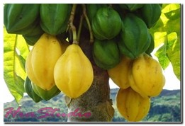Manfaat buah carica yang lain yaitu menetralkan dan membunuh bakteri jahat dalam usus, untuk menjaga kesehatan mata, menjaga kesehatan kulit, mencegah kanker, dan melancarkan pencernaan.
11. Manfaat Buah Cempedak
Buah cempedak memiliki kandungan vitamin A, vitamin C, vitamin B1, protein, karbohidrat, lemak, kalsium, zat besi, dan juga fosfor. Manfaat utama buah cempedak adalah untuk menyehatkan mata.
 Buah cempedak juga memiliki banyak manfaat seperti mengobati tumor, untuk mengurangi kolesterol dalam darah, untuk mengusir parasit, untuk meredakan malaria, membantu proses pencernaan, dan juga untuk meningkatkan daya tahan tubuh.
Buah cempedak juga memiliki banyak manfaat seperti mengobati tumor, untuk mengurangi kolesterol dalam darah, untuk mengusir parasit, untuk meredakan malaria, membantu proses pencernaan, dan juga untuk meningkatkan daya tahan tubuh.
12. Manfaat Buah Cermai
Buah cermai mengandung vitamin C, kalori, mineral, karbohidrat, serat kasar, kalsium, fosfor, zat besi, thiamin, dan ribloflavin. Dan ada juga kandungan lain seperti saponin, tanin, polifenol, asam galus, zat samak, dan toksik.
Buah cermai bermanfaat untuk mengobati berbagai penyakit seperti mengobati sembelit, untuk mengobati asma, untuk meringankan penyakit kanker, untuk menambah daya tahan tubuh, digunakan sebagai pelangsing, untuk menyehatkan tulang dan sangat baik untuk pertumbuhan.
13. Manfaat Buah Coklat
Buah coklat mengandung berbagai nutrisi seperti vitamin A, vitamin B1, vitamin B2, vitamin B3, vitamin C, vitamin E, asam pantotenat, karbohidrat, lemak, kafein, kalori, mineral esensial, magnesium, fosfor, feniletilamin dan juga antioksidan.
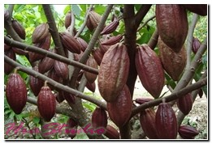Buah coklat dikenal mengandung antioksidan dan flavonoid yang sangat berguna untuk mencegah masuknya radikal bebas dalam tubuh dan juga menangkal penyebab penyakit kanker.
Manfaat lain buah coklat antara lain digunakan sebagai bahan dasar pembuatan coklat, manfaat lain untuk kesehatan yaitu sebagai penangkal bebas, mengurangi kadar kolesterol dalam tubuh, untuk menurunkan tekanan darah, mengobati sakit batuk, mencegah gangguan pada organ hati, mencegah kanker, mencegah penggumpalan darah, dan sebagai peningkat energi serta penghilang rasa lelah.
14. Manfaat Buah Delima
Buah delima mengandung banyak nutrisi seperti vitamin B6, vitamin C, energi, karbohidrat, gula, serat, lemak, protein, thiamine, riboflavin, niacin, asam pantotenat, folat, kalsium, besi, magnesium, fosfor, kalium, dan juga seng.
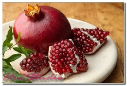Buah delima bermanfaat untuk mencegah osteoarthritis atau kerusakan tulang rawan, untuk mencegah penyakit Alzheimer, untuk melindungi gigi, meredakan gangguan jantung, mengobati sakit kanker, untuk menambah darah, dan sebagai obat diabetes.
15. Manfaat Buah Duku
Buah duku mengandung vitamin C, vitamin E, kalori, protein, lemak, karbohidrat, mineral, kalsium, fosfor, dan zat besi. Buah duku juga memiliki kandungan yang bersifat antioksidan.
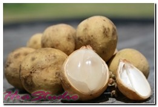Manfaat buah duku yaitu untuk menjaga kesehatan gusi, mencegah penuaan dini, mempercepat pemulihan tubuh, untuk melancarkan sistem pencernaan, menguatkan gigi, untuk membantu mengendalikan kadar kolesterol, baik untuk menjaga kesehatan kulit, dan sebagai antioksidan untuk menghalangi kerusakan oleh radikal bebas.
16. Manfaat Buah Durian
Buah durian mengandung banyak gizi yang cukup lengkap, diantaranya vitamin B, vitamin C, karbohidrat, protein, lemak tak jenuh, magnesium, fosfor, kalium, thiamin, polyfenhol, omega 3 dan omega 6, dan antioksidan.
 Buah durian memiliki jumlah kalori yang tinggi dibanding buah yang lainnya. Gula alami yang ada di dalam buah durian seperti fruktosa dan sukrosa mudah dicerna sehingga dapat mengembalikan energi tubuh dengan cepat. Selain itu buah durian memiliki kandungan potassium yang membantu mengurangi rasa lelah.
Buah durian memiliki jumlah kalori yang tinggi dibanding buah yang lainnya. Gula alami yang ada di dalam buah durian seperti fruktosa dan sukrosa mudah dicerna sehingga dapat mengembalikan energi tubuh dengan cepat. Selain itu buah durian memiliki kandungan potassium yang membantu mengurangi rasa lelah.
Manfaat lain buah durian adalah membantu melancarkan sistem pencernaan, membantu mengontrol tekanan darah, menyehatkan sistem kardiovaskular, mengatasi insomnia, mencegah sakit kanker, mencegah anemia, membantu menjaga kesehatan tulang, meredekan batuk, menurunkan berat badan, dan juga sebagai afrodisiak alami.
17. Manfaat Buah Jambu Biji
Buah jambu biji mengandung banyak serat pangan dan vitamin A, vitamin B komplek, vitamin C, vitamin E, vitamin K, folat, flavonoid, lycopene, lutein, kalium, asa pantotenat, niasin, mineral magnesium, tembaga, dan mangan.
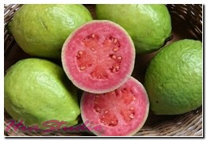Buah jambu biji sangat bermanfaat bagi kesehatan antara lain seperti, meningkatkan sistem imun,menurunkan resiko terkena kanker, mengobati diare, mengobati disentri, meredakan konstipasi, membantu mengontrol kadar glukosa, mengatur tekanan darah tinggi dan kolesterol, menjaga kesehatan mata, menjaga menyehatkan kelenjar tiroid, meredakan batuk dan pilek, menjaga kesehatan kulit dan membantu system pencernaan.
18. Manfaat Buah Jeruk
Buah jeruk kaya akan vitamin C, selain itu juga terdapat kandungan bermanfaat lainnya seperti folat, vitamin A, vitamin B1, antioksidan flavanoid, beta karoten, beta cryptoxanthin, zeaxanthin, dan lutein.
Jeruk bermanfaat bagi kesehatan seperti mencegaah penyakit jantung, mencegah penyakit stroke, mengontrol kadar gula dalam darah, menurunkan resiko terkena kanker usus besar, meningkatkan daya tahan tubuh, mencegah pembentukan batu ginjal, membantu kesehatan sistem pernafasan, menurunkan resiko terkena radang sendi, mengobati sariawan, untuk menjaga stamina, and juga untuk membantu melancarkan sistem pencernaan.
19. Manfaat Buah Kedondong
Buah kedondong mengandung vitamin A, vitamin B1, vitamin C, karbohidrat, protein, lemak, energi, kalsium, fosfor, zat besi, kalori, dan juga sukrosa. Selain itu ada juga kandungan yang penting lainnya untuk kesehatan seperti senyawa tannin, saponin, dan flavonoida.
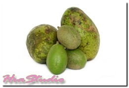Buah kedondong mengandung banyak manfaat bagi kesehatan seperti memperlancar sistem pencernaaan, menambah energi tubuh, membantu menurunkan demam, meningkatkan sistem kekebalan tubuh, dan mencegah penyakit jantung.
20. Manfaat Buah Kelapa
Kandungan gizi buah kelapa tidak hanya pada daging buahnya, tetapi juga terdapat pada airnya. Kandungan gizi daging buah kelapa antara lain kalori, lemak, kalsium, fosfor, dan zat besi.
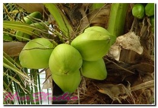Dan kandungan yang ada air kelapa meliputi makronutrien seperti karbohidrat, protein, lemak, dan dengan kandungan mikronutriennya berupa mineral dan vitamin, serta vitamin B3, vitamin B5, vitamin B6, vitamin C, kalium, kalsium, fosfor, zinc, natrium, dan magnesium.
Manfaat kandungan buah kelapa yaitu untuk mengobati sakit panas dalam, sebagai penawar racun dalam tubuh, mengatasi nyeri saat haid, menurunkan panas demam, mengatasi demam berdarah, mengobati influenza, mengobati kencing batu, dan menggantikan cairan dalam tubuh.
21. Manfaat Buah Kelengkeng
Buah kelengkeng mengandung banyak gizi diantaranya vitamin A, vitamin B, vitamin B1, vitamin B2, vitamin B3, vitamin C, kalsium, zat besi, mangan, fosfor, kalium, seng, magnesium, dan asam tartik.
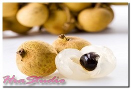Buah kelengkeng memiliki banyak manfaat diantaranya baik untuk menenangkan dan meningkatkan fungsi syaraf, mengatasi iritasi, membantu kerja jantung dn limpa, membantu mempercepat proses penyembuhan, melancarkan sirkulasi darah, sebagai pemasok energi yang baik untuk tubuh, meningkatkan daya tahan tubuh, dan bermanfaat untuk kesehatan kulit.
22. Manfaat Buah Kesemek
Buah kesemek mengandung berbagai nutrisi diantaranya vitamin A, vitamin C, vitamin E, vitamin K, karbohidrat, serat, protein, kolin, niacin, thiamin, riboflavin, pyridoxine, asam folat, kalium, kalsium, tembaga, zat besi, magnesium, mangan, fosfor, beta-karoten, zinc, dan licopen.
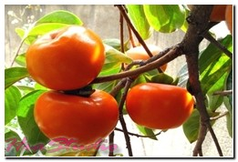Buah kesemek bermanfaat untuk mencegah pengerasan pembuluh darah, menjaga tekanan darah tetap stabil, membantu mencegah kanker, mencegah proses penuaan dini, meningkatkan daya tahan tubuh, menjaga kesehatan jantung, menjaga kesehatan paru-paru, dan menjaga tubuh tetap langsing.
23. Manfaat Buah Kiwi
Buah kiwi kaya akan vitamin c, serta ada juga vitamin A, vitamin B kompleks, vitamin E, vitamin K, serat pangan yang baik, beta-karoten, lutein, zeaxanthin, folat, riboflavin, niacin, dan tiamin.
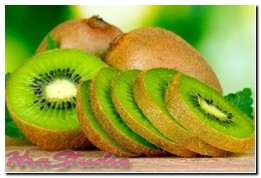Buah kiwi bermanfaat untuk meningkatkan daya tahan tubuh, mencegah penggumpalan darah, mengurangi resiko stroke, mengatasi hipertensi, mencegah serangan jantung, membantu penyerapan zat besi, membantu proses pencernaan, menurunkan resiko diabetes, menjaga kesehatan kulit, dan juga sebagai sumber antioksidan.
24. Manfaat Buah Kurma
Buah kurma mengandung banyak nutrisi, dan yang paling menonjol adalah potassium (kalium) dan magnesium. Kandungan lain yang terdapat pada buah kurma yaitu vitamin B komplek, vitamin C, boron, kalsium, kobalt, fluorin, zat besi, mangan, fosfor, sodium, selenium, seng, serta terdapat senyawa antioksidan seperti tannin, beta-karoten, lutein, dan zea-xanthin.
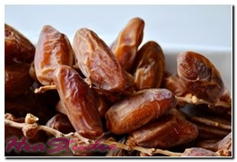Buah kurma bermanfaat untuk menambah energi, menjaga kesehatan tulang dan gigi, mengatasi gangguan usus, meningkatkan berat badan, menjaga kesehatan jantung, mencegah anemia, menjaga kesehatan sistem saraf, mengatasi rabun senja, dan juga sebagai antioksidan penangkal radikal bebas.
25. Manfaat Buah Langsat
Buah langsat berbeda dengan buah duku. Kandungan yang ada dibuah langsat yakni kalori, karbohidrat, mineral, protein, lemak, kalsium, fosfor, dan zat besi.
 Buah langsat bermanfaat untuk kesehatan dapat digunakan sebagai obat penyakit kanker, meringankan gejala demam, menguatkan tulang dan gigi, mengobati sakit malaria, mengatasi sakit disentri, menjaga kesehatan kulit, dan juga sebagai antioksidan penangkal radikal bebas.
Buah langsat bermanfaat untuk kesehatan dapat digunakan sebagai obat penyakit kanker, meringankan gejala demam, menguatkan tulang dan gigi, mengobati sakit malaria, mengatasi sakit disentri, menjaga kesehatan kulit, dan juga sebagai antioksidan penangkal radikal bebas.
26. Manfaat Buah Lemon
Buah lemon kaya akan kandungan vitamin C, vitamin B6, potassium, zat besi, magnesium, kalsium, serta banyak kandungan senyawa fitokimia seperti polifenol, terpenes, naringin, naringenin, hesperidin, diosmin, eriositrin, dan d-limonese.
Buah lemon bermanfaat untuk mengatasi masalah pencernaan, meredakan flu dan demam, menurunkan resiko terserang sakit jantung dan stroke, membantu melawan kolera, mencegah batu ginjal, mencegah anemia, mencegah kanker, mengatasi radang sendi, dan sebagai detoksifikasi racun dalam tubuh.
27. Manfaat Buah Leci
Buah leci kaya akan vitamin C, energi, karbohidrat, gula, protein, lemak, kalium, sikrosa, dan glukosa. Buah leci mengandung banyak nutrisi dan vitamin yang membantu melawan berbagai penyakit.
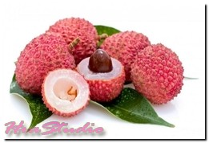Buah leci bermanfaat bagi kesehatan yakni untuk mencegah penyakit kanker, mencegah sakit jantung, menjaga tulang tetap sehat, menjaga daya tahan tubuh, memperlancar metabolisme dalam tubuh, mengurangi proses penuaan, memberi nutrisi untuk kulit, dan sebagai antioksidan bagi tubuh.
28. Manfaat Buah Labu
Buah labu mengandung vitamin A, dan juga flavonoid poli-fenolik seperti leutin, xanthin, dan karoten. Buah labu kaya akan serat makanan, antioksidan, magnesium, mineral, dan berbagai vitamin.
Buah labu bermanfaat untuk membantu mengurangi resiko sakit kanker, mengurangi resiko kerusakan hati, mencegah penuaan dini, menjaga daya tahan tubuh, mengurangi resiko sakit diabetes, memperlancar sistem pencernaan, membantu penyerapan kalsium oleh tulang, dan sebagai antioksidan penangkal radikal bebas.
29. Manfaat Buah Mangga
Buah mangga mengandung vitamin A, vitamin C, dan vitamin E. Buah mangga dapat bertindak sebagai disinfektan. Buah mangga dapat membersihkan darah yang kotor.
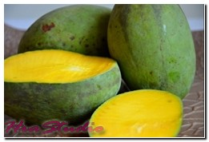Selain itu buah mangga juga dapat mengobati gangguan kesehatan lain seperti bau badan yang tidak enak. Buah mangga bisa membantu menurunkan panas dalam tubuh saat demam.
30. Manfaat Buah Manggis
Buah manggis banyak mengandung berbagai nutrisi, diantaranya vitamin A, vitamin B kompleks, vitamin C, xhanthones, alpha mangostin, gamma-mangostin, garcinone E, catechin, polisakarida, kuonin, stilbene, polifenol, zat besi, kalsium, magnesium, dan potassium.
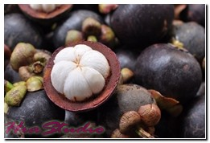Buah manggis bermanfaat untuk kesehatan diantaranya melawan radikal bebas, membantu mengurangi resiko penyakit kanker, menjaga daya tahan tubuh, mengobati disentri, mengatasi diare, mengatasi masalah kandung kemih, memperlancar sistem pencernaan,menjaga tekanan darah tetap stabil, mengobati sakit TB, dan menjaga kesehatan kulit.
31. Manfaat Buah Markisa
Buah marikas banyak mengandung fitokimia yang mampu membunuh sel kanker. Kandungan buah tersebut antara lain polifenol, karotenoid, Harman, harmol, harmalin, passflorine, harmine, karotenoid, viteksin, krisin, dan isoviteksin. Serta kandungan gizinya yakni energi, lemak, protein, serat, mineral, kalsium, fosfor, zat besi, karoten, tiamain, riboflavin, niasin, asam askorbat, dam asam nitrat.
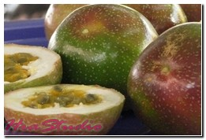Buah markisa bermanfaat untuk kesehatan sebagai penangkal kanker, mengatasi insomnia, mengobati batuk, mengobati alergi, menurunkan kadar kolesterol, memperlebar saluran pembuluh darah, melancarkan peredaran darah, sebagai penurun panas, mencegah hipertensi, sebagai antiseptic, dan menjaga kesehatan kulit.
32. Manfaat Buah Matoa
Buah matoa kaya akan vitamin A dan vitamin E. Buah matoa juga mengandung glukosa jenuh, jadi sebaiknya tidak dimakan terlalu banyak Karena dapat menyebabkan anda teler.
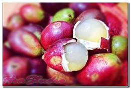Buah matoa bermanfaat untuk meningkatkan daya tahan tubuh, meringankan stress, meningkatkan kesuburan, mengurangi resiko terkena penyakit kanker, mengurangi resiko terkena sakit jantung koroner, menjaga kesehatan kulit, dan sebagai antioksidan penangkal radikal bebas.
33. Manfaat Buah Melon
Buah melon mengandung vitamin A, vitamin C, karbohidrat, protein, lemak, dan potassium. Buah melon memiliki kandungan air yang cukup banyak seperti halnya buah semangka.
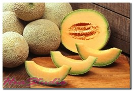Buah melon bermanfaat untuk kesehatan seperti mencegah dari penyakit stroke, mencegah penyakit diabetes, menyehatkan mata, membantu proses pencernaan, mencegah terkena serangan jantung, dan menjaga kesehatan kulit.
34. Manfaat Buah Mentimun
Buah mentimun juga mengandung kandungan air yang cukup tinggi. Kandungan yang ada dalam buah mentimun antara lain, vitamin A, vitamin B, vitamin C, dan juga mineral seperti magnesium, kalium, mangan, dan silika.
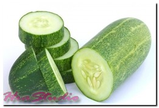Buah mentimun bermanfaat untuk melancarkan sistem pencernaan, memperkuat serta mnyehatkan sendi, membantu mencerna protein, menjaga tekanan darah tetap stabil, melawan kanker, menjaga kesehatan kulit, dan juga sebagai antioksidan tubuh yang baik.
35. Manfaat Buah Nanas
Buah nanas kaya akan vitamin C dan mangan, serta mengandung vitamin A, vitamin B1, vitamin B6, tembaga, serat pangan, folat, dan asam pantotenik. Buah nanas juga mengandung enzim proteolitik bromelain yang berperan membantu memecah protein.
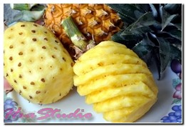Buah nanas bermanfaat untuk mencegah kanker, membantu sistem pencernaan, mambantu menurunkan berat badan, memperkuat daya tahan tubuh, meredakan peradangan, membantu penyembuhan sinusitis, memperkuat kinerja mata, dan sebagai antioksidan dari radikal bebas.
36. Manfaat Buah Nangka
Buah nangka mengandung vitamin A, vitamin B, vitamin C, serta mineral seperti magnesium, fosfor, kalium, kalsium, dan seng. Buah nangka juga mengandung kandungan gula sederhana seperti glukosa dan fruktosa yang dapa diolah angsung menjadi energi.
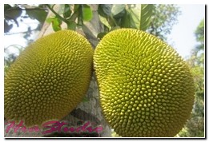Buah nangka bermanfaat untuk mengatasi gangguan pada sistem pencernaan, menurunkan resiko penyakit jantung, mencegah anemia, mengobati sakit asma, menjaga tulang tetap kuat, menjaga kesehatan kulit, menjaga kesehatan mata, dan sebagai antioksidan.
37. Manfaat Buah Naga
Buah naga juga banyak mengandung kandungan air di dalamnya. Kandungan buah naga antara lain, vitamin C, vitamin B kompleks, kalori, protein, karbohidrat, serat, kalsium, fosfor, zat besi, serta air.
Buah naga bermanfaat untuk mengontrol kadar gula dalam darah, menurunkan tekanan darah, menetralkan racun dalam tubuh, menjaga kesehatan mata, mengobati asma, dan juga sebagai antioksidan.
38. Manfaat Buah Pepaya
Buah pepaya mengandung vitamin C dan provitamin A. buah papaya bermanfaat membantu memecah serat makanan daam sistem pencernaan dan juga membantu memperlancar saluran pencernaan makanan.
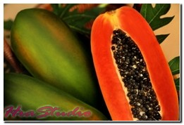Buah papaya juga dapat menanggulangi dan mengobati berbagai penyakit dan gangguan kesehatan lain seperti menyembuhkan luka dan menghilangkan infeksi. Manfaat papaya yang lain adalah dapat menghilangkan alergi.
39. Manfaat Buah Pir
Buah pir mengandung mineral, vitamin C, vitamin K, vitamin B9, kalium, serat, tembaga, mangan, magnesium, dan juga vitamin B kompleks.
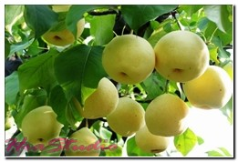Buah pir bermanfaat untuk membantu menyehatkan pencernaan,mengontrol tekanan darah, mencegah sakit stroke, meningkatkan daya tahan tubuh, memperkuat tulang, menjaga kesehatan kulit dam anti radikal bebas.
40. Manfaat Buah Pisang
Buah pisang mengandung vitamin A, Vitamin B1, vitamin B2, dan Vitamin C. manfaat buah pisang yaitu dapat membantu dalam mengurangi asam lambung dan juga membantu menjaga keseimbangan air dalam tubuh.
Buah pisang dapat juga mengobati penyakit dan gangguan kesehatan yang lain seperti gangguan pada lambung. Selain itu buah pisang dapat mencegah penyakit jantung dan stroke. Buah pisang juga berkhasiat menurunkan kadar kolesterol.
41. Manfaat Buah Rambutan
Buah rambutan mengandung vitamin C, vitamin A, karbohidrat, protein, serat, serta mengandung mineral seperti kalsium, zat besi, fosfor, niacin, potassium, zinc, dan magnesium.
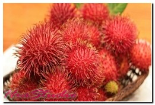Buah rambutan bermanfaat untuk memberikan antioksidan bagi tubuh, dapat mengganti sel yang rusak menjadi sel baru, membantu proses pencernaan, menjaga kesehatan mata, mengobati penyakit hipertensi, mengobati sakit diare, menurunkan kolesterol, dan mencegah kanker.
42. Manfaat Buah Salak
Buah salak mengandung banyak gizi seperti, vitamin C, energi, protein, karbohidrat, lemak, kalsium, fosfor, zat besi, serat dan juga vitamin B. Serat salak banyak terdapat pada kulit aria atau kulit tipis yang menempel pada daging buah salak. Karena itu saat memakan buah salak sebaiknya kulit aria tidak dibuang.
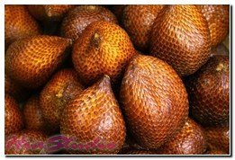Buah salak bermanfaat untuk meningkatkan daya tahan tubuh, menjaga kesehatan mata, mencegah sakit kanker, mengobati sakit diare, memperlancar pencernaan, meningkatkan kecerdasan otak, dan membantu proses diet.
43. Manfaat Buah Sawo
Buah sawo mengandung banyak nutrisi seperti vitamin A, vitamin B1, vitamin C, energi, protein, lemak, karbohidrat, kalsium, fosfor, dan zat besi. Serta riboflavin, nisin, vitamin B6, dan vitamin E.
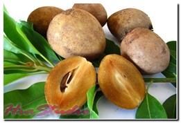Buah sawo bermanfaat untuk menguatkan tulang, menjaga kesehatan mata, menjaga kesehatan kulit, membantu pembentukan sel darah merah, mencegah kanker usus, mengobati sariawan, mencegah penuaan dini, dan sebagai obat untuk pendarahan.
44. Manfaat Buah Semangka
Buah semangka banyak mengandung air. Buah semangka juga mengandung vitamin A, vitamin C, kalori, lemak, natrium, karbohidrat, serat, asam amino sitrulin, asam spantotenik, tembaga, biotin, potasium, dan magnesium.
Buah semangka bermanfaat untuk menjaga tubuh tetap terhidrasi, melancarkan sistem pencernaan, menurunkan resiko kanker, mengurangi resiko serangan jantung, menurunkan tekanan darah tinggi, menjaga kesehatan ginjal, dan meningkatkan kesehatan tulang.
45. Manfaat Buah Sirsak
Buah sirsak juga cukup banyak mengandung air. Kandungan yang ada di buah sirsak antara lain karbohidrat, lemak, asam malat, asam sitrat, asam isotrat, vitamin C,dan juga mengandung serat pangan serta senyawa fitokimia lainnya yang banyak bermanfaat untuk kesehatan.
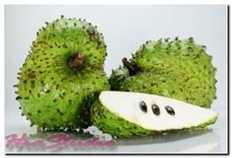Buah sirsak bermanfaat untuk melawan sel kanker, meningkatkan daya tahan tubuh, memberikan energi ke tubuh, menurunkan kolesterol, dan menjaga kesehatan kulit.
46. Manfaat Buah Srikaya
Buah srikaya mengandung vitamin A, vitamin B1, vitamin C, energi, protein, karbohidrat, lemak, kalsium, fosfor, dan zat besi. Buah srikaya mirip dengan buah sirsak namun ukurannya lebih kecil.
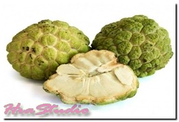Buah srikaya bermanfaat untuk memperbaiki saluran pencernaan, mengobati diare, mencegah kanker, membantu sistem pencernaan, menurunkan kolesterol tinggi, dan untuk mengobati sakit diabetes.
47. Manfaat Buah Stroberi
Buah stroberi mengandung provitamin A, vitamin B, vitamin B1, vitamin C, folat, potassium serta asam ellagic. Buah stroberi memiliki kandungan antioksidan yang dapat melawan radikal bebas, dan menyimpan nutrisi yang luar biasa serta rendah kalori.
Buah stroberi mampu mengurangi kadar kolesterol, membantu mengobati kanker, dan mengurangi gejala stroke. Buah stroberi juga mampu mengobati gangguan pada kandung kemih. Biasanya buah stroberi digunakan menjadi anti virus.
48. Manfaat Buah Tomat
Buah tomat mengandung vitamin A, vitamin B1, dan vitamin C. manfaat buah tomat yaitu salah satunya dapat membantu membersihkan darah dan hati kita. Selain itu buah tomat juga bagus untuk kesehatan kulit kita.
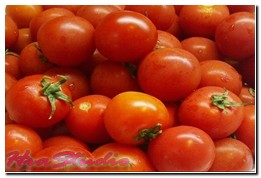Buah tomat juga dapat mencegah berbagai penyakit dan gangguan kesehatan seperti gusi berdarah, rabun senja, penggumpalan darah, usus buntu, dan juga kanker prostat.
49. Manfaat Buah Waluh
Buah waluh mengandung banyak nutrisi seperti kalsium, vitamin B1, fosfor, kalori, protein, hidrat arang, vitamin C, lemak, zat besi , vitamin A, natrium,dan tembaga.
Buah waluh bermanfaat untuk mencegah kanker, mengobati diabetes, menurunkan kadar kolesterol, menjaga kesehatan jantung, menjaga kesehatan mata, menguatkan tulang dan mencegah radang sendi, dan meningkatkan daya tahan tubuh.
50. Manfaat Buah Zaitun
Kandungan buah zaitun sangat lengkap seperti Vitamin, protein, lemak, oleocanthal, oleuropein aglycone dan masih banyak lagi. Buah zaitun mengandung lemak tak jenuh tunggal yang baik untuk kesehatan, yang dapat membantu menurunkan tekanan darah.
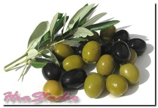Buah zaitun bermanfaat untuk menjaga kesehatan usus, menjaga dan melembabkan kulit, menurunkan tekanan darah tinggi, mencegah terkena serangan jantung, mencegah sakit stroke, memperkuat daya tahan tubuh, mencegah osteoporosis serta meredakan radang sendi, memperkuat tulang, dan sebagai antioksidan dari radikal bebas.